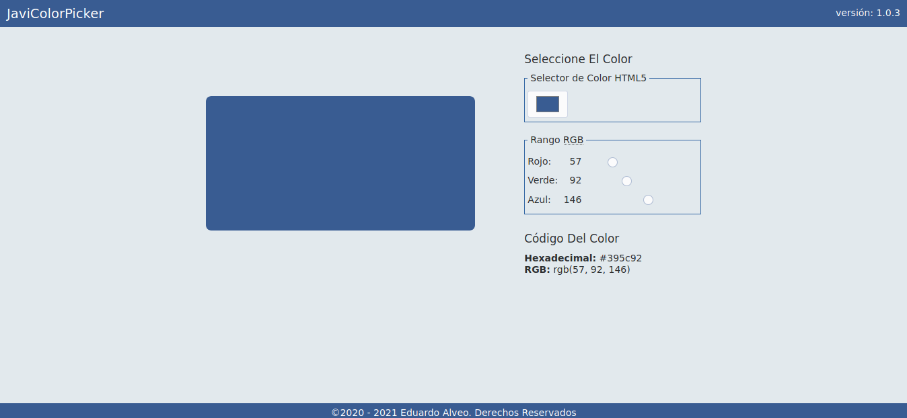

Eduardo J Alveo

Sobre Mí 🤵🏾 💯
- 🎓 Profesión: Almacenista, Maquetador Web y Programador
- 📝 Programación: JavaScript, HTML y CSS
- 🗣 Idioma: Español, Inglés (Básico)
- ⛪ Religión: Cristiano Católico Romano
- ⚾ Deporte: Béisbol
- 🖱 Apasionado Por: El Código Abierto y Linux (GNU/Linux)
Proyectos
🏗 Personales

JaviColorPicker
Sencillo selector de color, desarrollado en HTML, CSS y JavaScript.
Herramientas Favoritas
Debian 10

Sistema Operativo de código abierto, desarrollado y mantenido por la comunidad Debian. Se compone del kernel o núcleo Linux y herramientas del sistema operativo GNU, dandole el nombre de Debian GNU/Linux.
Para más información visita: www.debian.org
Escritorio Mate
Entorno de Escritorio de código abierto para los sistemas operativos GNU/Linux y Unix-Like (como FreeBSD). Utiliza la biblioteca GTK+3 y es una bifurcación del proyecto GNOME 2. El proyecto surge por el descontento de la comunidad con el proyecto GNOME 3 y su GNOME-Shell.
Para más información visita: mate-desktop.org
Editor || IDE Geany

Es un sencillo IDE de código abierto que cuenta con: un sencillo gestor de proyectos, resaltado de sintaxis, selector de color, soporte para plugins, reconocimiento de lenguajes de programación, lenguajes de script y lenguajes de etiquetas o marcado.
Para más información visita: www.geany.org
Navegador Firefox
Navegador web de código abierto, desarrollado y mantenido por Mozilla Fundation y subsidiada por Mozilla Corporation, estád disponible para una variedad de plataformas, cuenta con dos versiones: una versión con soporte extendido o ESR y la versión release.
Para más información visita: www.mozilla.org